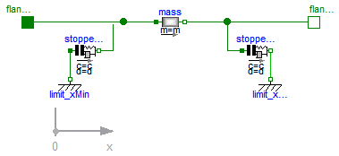

| Name | Description |
|---|---|
| Mass with free travel between two stoppers | |
| Calculation of winding parameters (wire diameter, number of turns et al.) and recalculation with optionally chosen parameters; to be adapted to particular design tasks |

In translatory actuators with limited stroke, the armature with its inertia can travel between two stoppers.
| Type | Name | Default | Description |
|---|---|---|---|
| Length | L | Length of component from left flange to right flange (= flange_b.s - flange_a.s) [m] | |
| Mass | m | Armature mass [kg] | |
| TranslationalSpringConstant | c | Spring stiffness between impact partners [N/m] | |
| TranslationalDampingConstant | d | Damping coefficient between impact partners [N.s/m] | |
| Real | n | 2 | Exponent of spring forces (f_c = c*|s_rel|^n) |
| Position | x_max | Position of stopper at maximum armature position [m] | |
| Position | x_min | Position of stopper at minimum armature position [m] |
| Type | Name | Description |
|---|---|---|
| Flange_a | flange_a | |
| Flange_b | flange_b |
model TranslatoryArmatureAndStopper
"Mass with free travel between two stoppers"
parameter SI.Length L(start=0)
"Length of component from left flange to right flange (= flange_b.s - flange_a.s)";
parameter SI.Mass m( start=1) "Armature mass";
parameter Modelica.SIunits.TranslationalSpringConstant c(
start = 1e11) "Spring stiffness between impact partners";
parameter Modelica.SIunits.TranslationalDampingConstant d(
start = 2e7) "Damping coefficient between impact partners";
parameter Real n(final min=1)=2
"Exponent of spring forces (f_c = c*|s_rel|^n)";
parameter SI.Position x_max(start=10e-3)
"Position of stopper at maximum armature position";
parameter SI.Position x_min(start=0)
"Position of stopper at minimum armature position";
Modelica.SIunits.Position s(start=0)
"Absolute position of center of component (= flange_a.s + L/2)";
Modelica.SIunits.Velocity v(start=0)
"Absolute velocity of components (= der(s))";
Modelica.SIunits.Acceleration a(start=0)
"Absolute acceleration of components (= der(v))";
Modelica.Mechanics.Translational.Components.Mass mass(
final L=L, final m=m);
Modelica.Mechanics.Translational.Interfaces.Flange_a flange_a;
Modelica.Mechanics.Translational.Interfaces.Flange_b flange_b;
Modelica.Mechanics.Translational.Components.Fixed limit_xMin(
s0=x_min);
Modelica.Mechanics.Translational.Components.Fixed limit_xMax(
s0=x_max);
Modelica.Mechanics.Translational.Components.ElastoGap stopper_xMax(
final c=c,
final d=d,
final n=n,
final s_rel0=0);
Modelica.Mechanics.Translational.Components.ElastoGap stopper_xMin(
final c=c,
final d=d,
final n=n,
final s_rel0=0);
equation
mass.s = s;
mass.v = v;
mass.a = a;
connect(mass.flange_a, stopper_xMin.flange_b);
connect(limit_xMax.flange, stopper_xMax. flange_b);
connect(stopper_xMax.flange_a, mass.flange_b);
connect(mass.flange_a, flange_a);
connect(limit_xMin.flange, stopper_xMin.flange_a);
connect(flange_b, mass.flange_b);
end TranslatoryArmatureAndStopper;
 Modelica.Magnetic.FluxTubes.Examples.Utilities.CoilDesign
Modelica.Magnetic.FluxTubes.Examples.Utilities.CoilDesign
This model exemplarily shows dimensioning of a winding (wire diameter, number of turns) based on desired operating conditions (voltage, temperature, current density, conductor filling factor) for a given cross-section area of the winding. It can be modified according to the parameters given and sought after for a particular design project.
The calculated winding resistance and number of turns can be used as input parameters to the electrical subsystem of a device to be modelled. Operating voltage V_op can be minimum, nominal and maximum voltage respectively as specified for a particular design project. In conjunction with the setting of the operating temperature T_op, this enables for analysis of the device under worst-case conditions (e.g., minimum required magnetomotive force, maximum allowed ohmic losses, minimum and maximum force respectively).
For manufacturing of a winding, the obtained wire diameter d_wireCalculated must be rounded to that of an available wire. In order to analyse the influence of this rounding, one can enter the chosen wire diameter d_wireChosen and number of turns N_chosen as optional input. Calculation of the resulting winding parameters enables for comparison with the ones obtained otherwise.
Extends from Modelica.Icons.Record (Icon for records).
| Type | Name | Default | Description |
|---|---|---|---|
| Resistivity | rho_20 | 0.0178e-6 | Resistivity of conductor material at 20 degC (default: Copper) [Ohm.m] |
| LinearTemperatureCoefficient | alpha_20 | 0.0039 | Temperature coefficient of conductor material's resistivity at 20 degC (default: Copper) [1/K] |
| Temperature | T_op | 293.15 | Operating temperature of winding [K] |
| Length | h_w | Height of winding cross-section [m] | |
| Length | b_w | Width of winding cross-section [m] | |
| Length | l_avg | Average length of one turn [m] | |
| Voltage | V_op | Operating voltage (nominal/ minimum/ maximum voltage depending on design objective) [V] | |
| CurrentDensity | J_desired | 4e6 | DESIRED current density at operating temperature and voltage resp. [A/m2] |
| Real | c_condFillChosen | 0.6 | CHOSEN conductor filling factor = total conductor area without insulation/ total winding area |
| Chosen feasible parameters (optional) | |||
| Diameter | d_wireChosen | d_wireCalculated | CHOSEN available wire diameter (without insulation) [m] |
| Real | N_chosen | N_calculated | CHOSEN number of turns |
record CoilDesign
"Calculation of winding parameters (wire diameter, number of turns et al.) and recalculation with optionally chosen parameters; to be adapted to particular design tasks"
extends Modelica.Icons.Record;
parameter SI.Resistivity rho_20 = 0.0178e-6
"Resistivity of conductor material at 20 degC (default: Copper)";
parameter Modelica.SIunits.LinearTemperatureCoefficient alpha_20=
0.0039
"Temperature coefficient of conductor material's resistivity at 20 degC (default: Copper)";
parameter SI.Temperature T_op = 293.15 "Operating temperature of winding";
final parameter SI.Resistivity rho = rho_20 * (1 + alpha_20 *(T_op - (20 - Modelica.Constants.T_zero)))
"Resistivity at operating temperature";
parameter SI.Length h_w "Height of winding cross-section";
parameter SI.Length b_w "Width of winding cross-section";
final parameter SI.Area A_w = h_w * b_w "Cross-section area of winding";
parameter SI.Length l_avg "Average length of one turn";
parameter SI.Voltage V_op
"Operating voltage (nominal/ minimum/ maximum voltage depending on design objective)";
parameter SI.CurrentDensity J_desired = 4e6
"DESIRED current density at operating temperature and voltage resp.";
parameter Real c_condFillChosen = 0.6
"CHOSEN conductor filling factor = total conductor area without insulation/ total winding area";
final parameter Real N_calculated = V_op/ (rho * l_avg * J_desired)
"CALCULATED number of turns";
final parameter SI.Diameter d_wireCalculated = sqrt(4 * A_w * c_condFillChosen /(pi * N_calculated))
"CALCULATED wire diameter (without insulation)";
final parameter SI.Area A_wireCalculated = pi * d_wireCalculated^2 / 4
"Calculated wire cross-section area";
final parameter SI.Resistance R_calculated = rho * N_calculated * l_avg / A_wireCalculated
"Winding resistance at operating temperature and voltage resp. with CALCULATED number of turns and wire diameter";
final parameter SI.Power P_calculated = V_op^2 / R_calculated
"Winding's ohmic losses at operating temperature and voltage resp. with CALCULATED number of turns and wire diameter";
parameter SI.Diameter d_wireChosen = d_wireCalculated
"CHOSEN available wire diameter (without insulation)";
parameter Real N_chosen = N_calculated "CHOSEN number of turns";
final parameter SI.Area A_wireChosen = pi * d_wireChosen^2 / 4
"Wire cross-section area resulting from CHOSEN wire diameter";
final parameter SI.Resistance R_actual = rho * N_chosen * l_avg / A_wireChosen
"Winding resistance at operating temperature and voltage resp. resulting from CHOSEN number of turns and wire diameter";
final parameter SI.Power P_actual = V_op^2 / R_actual
"Winding's ohmic losses at operating temperature and voltage resp. resulting from CHOSEN number of turns and wire diameter";
final parameter SI.CurrentDensity J_actual = V_op * 4/(R_actual * pi * d_wireChosen^2)
"Current density at operating temperature and voltage resp. resulting from CHOSEN number of turns and wire diameter";
final parameter Real c_condFillActual = N_chosen * pi * d_wireChosen^2 /(4 * A_w)
"Conductor filling factor resulting from CHOSEN number of turns and wire diameter";
end CoilDesign;